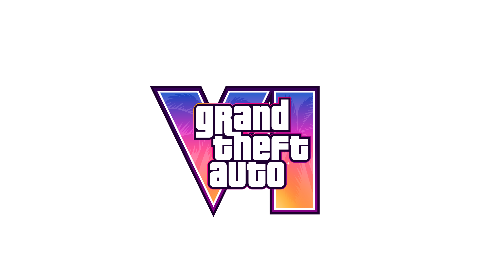
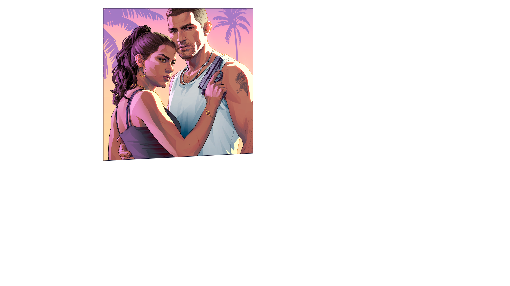

PUBLIC MATERIAL // VISUAL INDEX // REV. 006
PROJECT
VI
A community-built index of publicly released promotional artwork, reconstructed as a verifiable visual archive.


25.7617° N 80.1918° WPROFILECOMMUNITY / PUBLIC
MANIFESTLOADING
ASSETS--
INTEGRITYNOT SCANNED
REFERENCE MATERIAL
Visual archive
Indexed files are public promotional references supplied for this fan reconstruction. Select an entry to inspect its manifest record.
PROJECT VI / VERIFICATION CONSOLELOCAL TOOLCHAIN
$ npm run verify waiting for integrity scan…